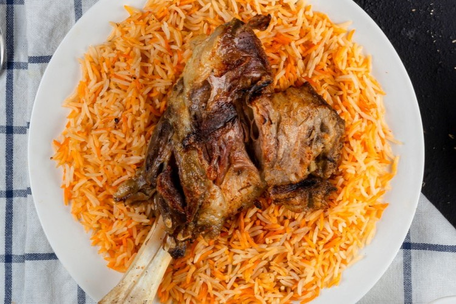

Mandi is a traditional Yemeni dish made with tender meat and fragrant, spiced rice. It is known for its rich flavor, tender meat, and delicious smoky aroma.
Mandi is usually prepared with chicken or lamb and served over seasoned Basmati rice. The meat is slowly cooked with a blend of spices, giving the dish its distinctive taste and aroma.
Season the chicken or lamb with Mandi spices, garlic, salt, and black pepper.
Cook the meat slowly until it becomes tender and develops a rich flavor.
Cook the Basmati rice with onions, tomatoes, spices, and salt until it becomes fluffy and aromatic.
Place the cooked meat over the seasoned rice and allow the flavors to come together.
Add a small amount of charcoal to give the Mandi its traditional smoky aroma.
Serve the hot Mandi with the tender meat placed on top of the fragrant rice.
Use good-quality Basmati rice and cook the meat slowly to get tender meat and flavorful, fluffy rice.